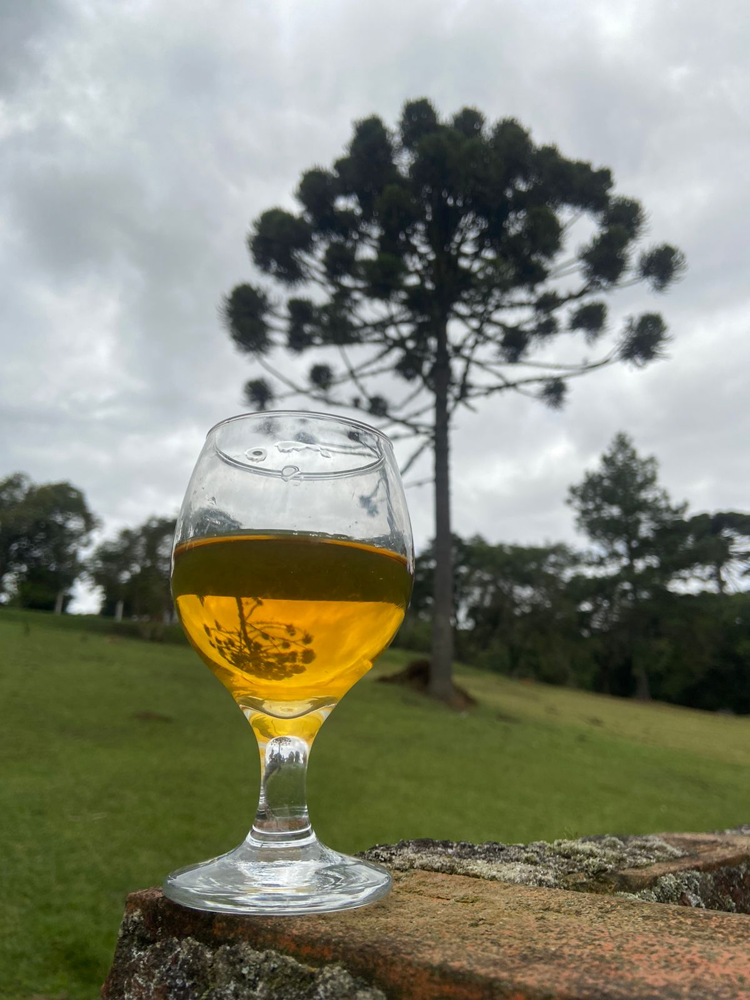

Sobre o Hidromel Alchemist
Bebam o hidromel do conhecimento para aprender o que é viver e morrer com honra.
Nossa missão é: "Produzir o melhor nectar dos Deuses, para que na morte, sejamos recompensados pelo abraço de uma valquíria.".
As donzelas guerreiras que irão levá-los aos reluzentes portões de Valhala.
Nosso estabelecimento
Alchemist Hidromel está localizado no coração da Mata Atlântica.
Sobre o Hidromel
- Bebida mais antiga do mundo
- Feito da fermentação do mel diluído e água
- Sabor similar em equilíbrio, corpo, final e intensidade de sabor como um vinho branco semi-seco com uma agradável caráter de mel
- Sabor com leve dulçor, delicados ésteres frutados e álcool limpo no paladar